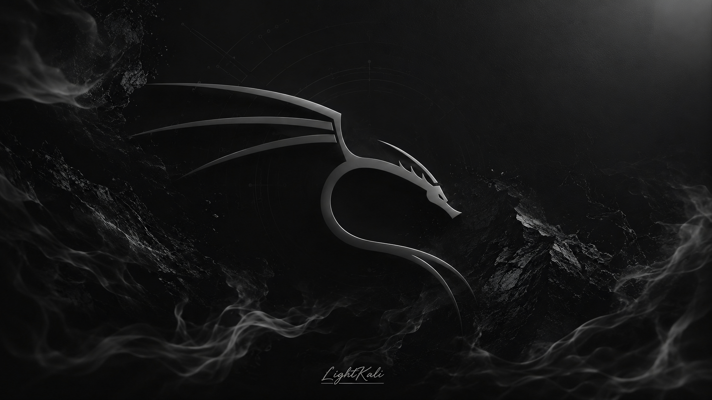
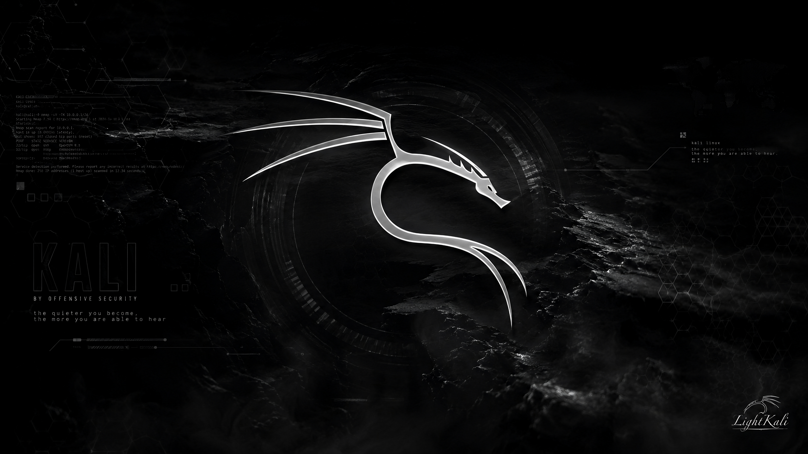
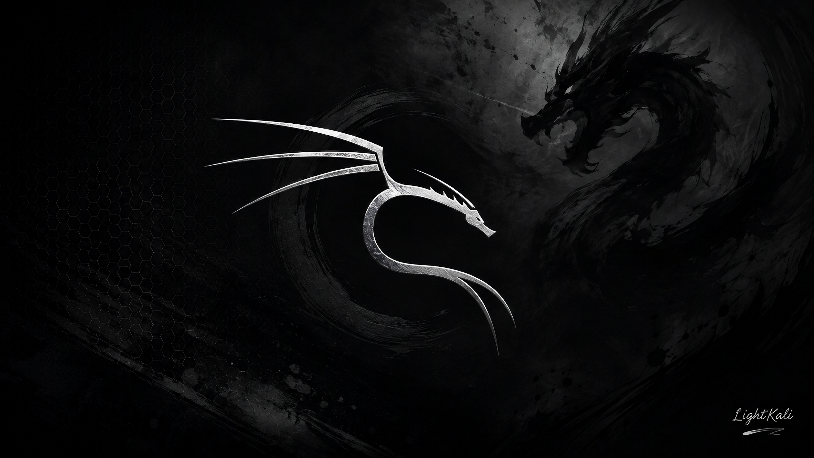
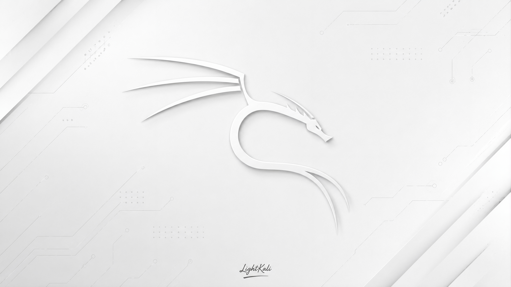

01
Web-First Operating Experience
The visible environment is centered on web technologies, giving the operating surface a responsive and flexible foundation.
Light Kali, also known as LightKali and Kali Light, is the first Web OS from Iran built around a Linux-based foundation and a web-first operating experience. The project brings together responsive computing, modular packages, developer tooling and practical cybersecurity workflows.
Light Kali combines a Linux-oriented foundation with a web-first operating model. Its long-term vision is to become a highly capable global Web OS platform while preserving a strong identity as an Iranian technology project.
The visible environment is centered on web technologies, giving the operating surface a responsive and flexible foundation.
Linux concepts, system capabilities, files, permissions and technical workflows remain close to the user experience.
Security-oriented workflows are treated as a central part of the platform instead of an afterthought.
Specialized capabilities can be separated into packages so the core environment remains focused as the ecosystem grows.
The interface is built to scale from large displays to tablets and compact mobile devices.
Documentation, APIs, package development, validation and publishing are treated as strategic parts of the project.
Light Kali explores an operating environment where the web layer is an important part of the operating experience itself. As the first Web OS from Iran, the project is designed around a modern surface for Linux-oriented computing, cybersecurity workflows and modular software.
Security-focused capabilities organized around the Light Kali modular package model.
Explore Security Packages →Networking utilities and workflows designed for a Linux-based cybersecurity environment.
Explore Network Packages →Resources and components for extending the Light Kali ecosystem.
Explore Developer Packages →Focused utilities for interacting with the operating environment and technical workflows.
Explore System Packages →Explore the technical documentation and development structure behind the Light Kali Web OS, including package development, architecture, APIs, validation and publishing.
Explore the technical direction, package architecture and development resources.
Open Developer Center →Read Light Kali guides, architecture references, Linux basics and technical documentation.
Read Documentation →Learn how modular packages fit into the Light Kali Web OS ecosystem.
Package Development →Explore the architecture and interface direction for future ecosystem components.
Explore APIs →Understand quality and validation concepts for packages and components.
View Validation →Review the publishing direction for the future Light Kali package ecosystem.
Publishing Guide →Selected Light Kali wallpapers are loaded lazily so the initial page remains lighter while additional visuals are fetched only when needed.

Light Kali dark Web OS wallpaper.

Dark Linux Web OS visual.

Cybersecurity-focused Light Kali wallpaper.
Light theme Light Kali wallpaper.
Bright Light Kali Web OS wallpaper.

White Light Kali interface wallpaper.
Light Kali, also written as LightKali or Kali Light, is a Linux-based Web OS project from Iran focused on creating a modern web-first operating environment. The project combines a responsive interface with modular packages, cybersecurity-oriented workflows and a developer ecosystem.
Light Kali's vision is not limited to a local audience. The project aims to build a distinctive global Web OS platform while maintaining a strong Iranian identity and contributing a new direction to web-native operating environments.
The project website is organized around technical documentation, packages, developer resources, Web OS architecture, project updates, community information and supporting content so each major subject can be discovered and understood independently.
Core information about Light Kali, LightKali, Kali Light, its Linux foundation and its Web OS direction.
The first Web OS from Iran, built to pursue a distinctive global direction in cybersecurity, Linux and web-native computing.